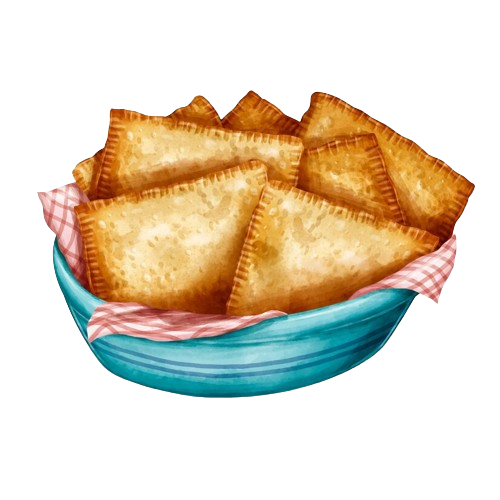

Barraca da Zilma
Pão, Pasteis Assados e Fritos e Suco Natural.

Barraca dos Morangos
Uvas e morangos com cobertura de chocolate
Licor de morango
Geleia de morango
Caipirinha de morango
Maçãs do amor
Pão caseiro
Alface, cebolinha e repolho.

Barraca Delicia pasteis
Pastel frito
Caldo de cana
Trufas caseiras de morango, uva, maracujá, amendoim e limão.